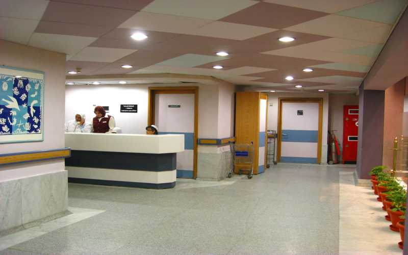

مجموعة عيادات الحصري
الأقسام الطبية
العيادات الخارجية:
تعمل من الساعة 8 ص إلى 10م يوميا, بأكثر من 40 عيادة في جميع التخصصات الطبية ويقوم بالأشراف عليها مجموعة من الاستشاريين والأخصائيين ذوى الكفاءة العالمية.
يوجد قسم استقبال خاص يعمل بنظام الكمبيوتر Q-Matic متطور للحجز والاستعلام والمواعيد وترتيب دخول المرضى للأستشارى
تمتاز العيادات الخارجية بتجيزها بأحدث الأجهزة التشخيصية وهى تغطى التخصصات التالية:
الباطنية والجهاز الهضــــمي - أمــــــــــــــــراض القلب - الأمـــــــــــراض الصـــدريــة - الــــــجراحــة الـعـــامـة -جـــــراحـــــــة الـــــصــــــدر - جراحة المسالك البولـية - جـــــراحة المخ والأعصـــاب - جراحة الأوعية الـدموية - جــــــراحــــــة الـتـجـمـيــــل - أنـف وأذن وحـنـجـــرة - الــتخـاطــب - الـســـــــــــمـعـيــــــات - الســـــكر والغدد الـــصماء - الـجلدية والـتـناسلــــية - الأمراض النفسية والعصبية - أمـــــراض الكـلــــــــى - المناعة والرومــــــاتيزم - أمــــــراض الــــــــــدم - النساء والتوليد والعــــــقم – جــــــراحة الـعـظــــام - الأطــــفـــــال – كــبـــــــد أطـــفــــــال - قـــــــــلـــــب أطــــــــــفال - نفسية وعصبية أطفال - جـــــــراحــــــة أطــــــــفال – الـــــــــــعــــيــــــــون
تعليمات العيادات الخارجية
- العيادات الخارجية تتكون من 13 غرفه و غرفه للعمليات الصغرى وغرفة رسم القلب و 29 تخصص و375 عيادة أسبوعية
- يبدء الحجز الساعة 8:30 ص يومياً إلى الساعة 10:30 م
- ماعدا الجمعة 9:30 ص إلى الساعة 9:30 م
- يبدء الرد على التليفون من الساعة 9 ص إلى الساعة 10:30 مً يومياً
- ماعدا الجمعه من الساعة 10ص إلى الساعة 9.30 م
- ترتيب دخول المرضى للطبيب بأسبقية الحضور وليس بالحجز تليفونيا او من الموقع
- عند بدء الحجز يتم الحجز لأي طبيب على مدار اليوم دون التقيد بساعة حضور الطبيب
- الإستشارات الطبية خلال أسبوعين من تاريخ الكشف ماعدا الأطفال أسبوع واحد
- يبدء المريض بالتوجه للاستعلامات للسؤال عن الطبيب إذا كان استشاره يتم إعطاءه رقم الكيو ويتوجه المريض إلى العيادة
- يتم إدخال المرضى للعيادات عن طريق نظام جهاز الكيوماتك ويكون الرقم بأولويه الحضور
- إذا كان المريض كشف نقدي يتم التوجه إلى الخزينة للدفع ثم الرجوع إلى الاستعلامات لاخد رقم الكيو ثم التوجه إلى العيادة للكشف
- وإذا كان مريض شركه يتوجه لعمل استمارة الكشف ثم إلى الاستعلامات لاخذ رقم الكيو والتوجه للعيادة للكشف
- يوجد بعد المرضى يحضروا إلى الاستعلامات في الصباح للحجز لطبيب يحضر في المساء ويتم عمل كافه الإجراءات معهم وإعطائهم رقم الكيو
- يتم الانتظار حتى حضور الطبيب إمام العيادة والدخول إلى الطبيب عند النداء على الرقم الخاص به
- لايتم تحديد رقم الكيو إلا في نفس اليوم بحضور المريض أو من يتمم له الحجز ولا يتم اخذ الرقم بالتليفون أو بالنت أو فى يوم سابق
- في حاله عدم تواجدكم عند النداء على الرقم يتم تأجيل الدخول إلى بعد الرقم 10 أو 20 أو 30.... الخ بالتبادل مع الرقم التالى
مثال على ذلك:
- مريض رقم (3) متأخر يتم دخوله قبل رقم (11) بالتبادل وهكذا
- رقم (4) متأخر يتم دخوله قبل رقم (12) بالتبادل وهكذا
تواصل معنا